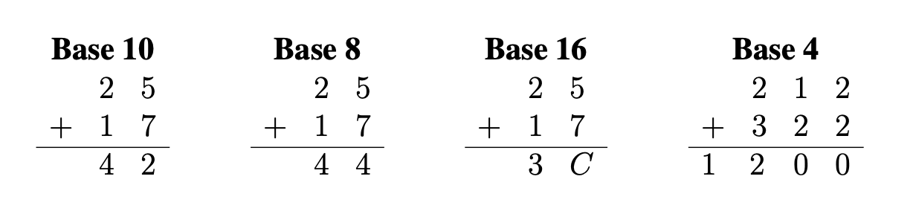

Practical Class 06 · Strings, Recursion and Searching
Mooshak: Exercises for Submission
For the purpose of the grade assigned to the resolution of exercises throughout the semester, the exercises you can submit from this class are the following exercises, which are part of the set of exercxsises from the last two practical classes:
- [PI016] Signal in the Silence (weight 25%) (main exercise)
- [PI017] Sed (weight 25%) (extra exercise)
- [PI018] Palindrome Fix (weight 25%) (main exercise)
- [PI019] Gift of Matrix (weight 25%) (extra exercise)
- [PI020] License Plate (weight 25%) (extra exercise)
- [PI021] Binary Search Tutorial (weight 25%) (main exercise)
- [PI023] Racing (weight 25%) (main exercise)
Submission deadline: April 14 (submit on the Imperative Programming Mooshak)
You are encouraged to talk with the instructors and other
colleagues to ask for ideas on how to solve a problem, but you also
need to make an effort to code your solution. That is the way to become competent at programming and problem
solving, and also to become prepared for the pratical evaluations. The same is
valid for ChatGPT or other LLMs. You may
ask for suggestions on how you could solve a given problem, but also
ask it to avoid giving you the code solution.
After the deadline, the problems will remain available on Mooshak, but
submissions will no longer count toward your grade.
Each class accounts for 10% of the grade for this component.
For a problem to count, you must pass all the tests (i.e., get accepted). Even if you solve all the problems, the maximum score per class is 100%.
To achieve 100%, it will always be sufficient to solve the main exercises.
Exercise 1) Strings in Mooshak
-
 [PI016] Signal in the Silence
[PI016] Signal in the Silence
The goal of this exercise is to decode a message transmitted in binary Morse code.
Important note about the encoding (information shown in the problem image):1: represents a dot111: represents a dash0: separates symbols within a letter000: separates letters within a word0000000: separates words
Ain Morse is.-, which in binary becomes10111(dot + separator + dash).
Read the problem statement carefully and try to submit an Accepted solution. Don't forget to test it first on your computer!
Hints
- The problem is essentially about parsing: you need to traverse the binary string and identify what each group of
0s and1s represents. Think of the problem in layers:- Split the string into words (separated by 7 zeros).
- Within each word, split into letters (separated by 3 zeros).
- Within each letter, split into symbols (separated by 1 zero): a
1is a dot, and111is a dash. - Consult the Morse table to convert each sequence of dots and dashes into the corresponding character.
Hints #2
- Instead of analyzing the string character by character and trying to figure out where you are, it is simpler to traverse it by counting groups of consecutive identical characters.
- You can use a helper function that advances the index while the character remains the same and returns how many were found:
- Be careful with the end of the string!
Hints #3
- A hardcoded Morse table can be useful!
- A practical way in C is to use an array of strings indexed by the ASCII code of the character.
- To decode, simply iterate over the 36 possible characters and compare the sequence of dots and dashes you built with
data[c], using thestrcmpfunction. -
[PI018] Palindrome Fix
In this exercise, you are asked to check whether a string is a palindrome and, if it is not, compute the minimum number of changes required to make it one.
Recall that a palindrome is a string that reads the same from left to right and from right to left. For example, "madam" is a palindrome, but "xoxo" is not.
Read the problem statement carefully and try to submit an Accepted solution.
Hints
- A palindrome must satisfy
s[i] == s[n-1-i]for all positionsi.- You only need to check half of the string (i.e., the other half is symmetric).
- How can you compute the minimum number of changes needed to make it a palindrome?
- Think about what you need to do whenever you find a pair
(s[i], s[n-1-i])where the characters are different. - You need to change at least one of them to make that pair symmetric, right?
- With this in mind, what can you conclude about the minimum number of changes?
Exercise 2) Recursion and Searching
Simple Recursions
- The Fibonacci Prophecy. According to an ancient prophecy, a sequence of numbers holds the key to unlocking hidden treasures.
The sequence follows the following pattern:- The first two numbers are 0 and 1.
- Every next number is the sum of the two previous ones.
Write a recursive function to find then-th Fibonacci number:
int fibonacci(int n);
Examples:Input: What is the n value? 6 Output: The 6-th Fibonacci number is: 5 Input: What is the n value? 13 Output: The 13-th Fibonacci number is: 144
- Palindromes. Remember that a palindrome is a word that reads the same forward and backward.
Write a recursive function that checks if a given string is a palindrome:
int isPalindrome(char str[], int start, int end);
The function should return1if the string is a palindrome and0otherwise.
Examples:Input: Enter a word: level Output: The word is a palindrome! Input: Enter a word: magic Output: The word is NOT a palindrome.
Sequential Search and Binary Search
- A group of scholars found a sorted scroll that contains a list of magical numbers. They need to find a specific number in the list as quickly as possible.
Write a program search.c that reads from the standard input the sizenof a sequence of integer values and an array of sizenthe ordered sequence of integers. Finally reads, still from standard input, akeyvalue to be search for.
The program should contain an auxiliary function responsible for the sequential search of thekeyvalue in the array:
void linearSearch(int arr[], int n, int key);
The function should output the index of thekeyin the array, if found, or a message stating "Not Found".In order to test your program, write a file test1.in with the following 3 lines:
10 1 2 3 5 7 8 9 12 14 15 8
Then compile your program and test it as follows:
$ gcc -o search search.c
$ ./search < test1.in
6The answer
6is the position-index of the value8that appears in the sequence given intest1.in. Now modify this file and change the key from 8 to 13 and execute the compiled program again:
$ ./seqsearch < test1.in
Not Found"Not Found"should be the result you get since the value 13 doesn't exist in the sequence. If you want to test your program with more test cases you just need to modify the test file or create new ones and execute them by redirect the standard input to come from the file.
The intent of this exercise is to get you used to plan test cases and to run experiences with versions of your program to confirm if it does what you expect it should do and whether it responds to what was required.
- Modify your program from previous exercise and add to it an
function of a non-recursive binary search to find
the given
key:
void binarySearch(int arr[], int low, int high, int key);
The function shoud output the position of the key in the sequence, or a message "Not Found" if not found. - Modify the program and include a new binary search function, but now use recursion.
- Modify the program from the first and second exercises of this practical class to generate an array of
n(e.g., 1000, 10000 and 1000000) random integers instead of reading them from the user.
Implement one of the sorting algorithms presented in theoretical classes and execute both sequential and binary searches to find a givenkey.
Measure and compare the execution time of each searching strategy using theclock()function from thetime.hlibrary. Observe which algorithm performs the fastest.
An example of the code structure is as follows:
- Modify your program from previous exercise and add to it an
function of a non-recursive binary search to find
the given
-
[PI021] Binary Search Tutorial
Use the solution from the previous exercise to solve the [PI021] problem on Mooshak and produce an Accepted solution.
Note that the naive approach is not sufficient for this problem! The simplest solution would be to scan the entire array for each value. But withnandmup to 200,000, this would result in up to 40,000,000,000 operations, which is far too slow.
The fact that the array is sorted allows for a much better approach! Apply binary search. -
[PI023] Racing
You have a collection of race cars, each with a minimum skill level required to drive it (sorted list). For each driver, determine the most difficult car they can drive. If they cannot drive any, the answer is 0.
Read the problem statement carefully and try to submit an Accepted solution.
Hints
- The problem reduces to finding, for each driver with skill
s, the largest value in the car array that is less than or equal tos.- Since the array is sorted, you don’t need to scan it entirely: you can use binary search!
- But note that you want to find the last position where the car’s value is less than or equal to the driver’s skill (
s).- This is called the upper bound: find the first element that is greater than the value, then step back one position.
- Adjust the binary search to find this value.
Exercise 3) Manual Base Conversion
Number System and Base Conversion
A number system is a way to represent and express numbers using a specific base. Each system is characterized by a base, which determines the number of different digits used in that system.
In computing and mathematics, the most common numerical systems are:
- Decimal (Base 10): Used in everyday life, it consists of digits from 0 to 9.
- Binary (Base 2): Used in digital electronics and computing, it consists of only 0 and 1 digits.
- Octal (Base 8): Sometimes used in computing, consists of digits from 0 to 7.
- Hexadecimal (Base 16): Commonly used in programming and memory addressing, it includes digits 0-9 and letters A-F (representing values 10-15).
It is often useful (or necessary) to convert a given number n in a base b1 to another base b2. Base conversion methods can be defined as follows:
- Decimal to Binary: Repeatedly divide by 2, recording the remainders in reverse order.
- Binary to Decimal: Multiply each bit by 2 raised to its position index and sum the results.
- Decimal to Hexadecimal: Repeatedly divide by 16, recording remainders in reverse orde.
- Hexadecimal to Decimal: Multiply each digit by 16 raised to its position index and sum the results.
- Binary to Hexadecimal: Group bits in sets of four and convert each group to its hexadecimal equivalent.
- Convert the following decimal numbers to binary:
- 13
- 45
- 100
- Convert the following binary numbers to decimal:
- 1010
- 11011
- 100001
- Convert the following decimal numbers to hexadecimal:
- 255
- 64
- 123
- Convert the following hexadecimal numbers to decimal:
- 1F
- A3
- B7
- Convert the following binary numbers to hexadecimal:
- 11010101
- 10001111
- 11110000
Exercise 4) Programming Base Conversion
- Decimal to Binary Converter. Write a program that takes a decimal number as input and prints its binary representation.
- Binary to Decimal Converter. Write a program that takes a binary number as input and converts it to decimal.
- Decimal to Hexadecimal Converter. Write a program that converts a given decimal number to its hexadecimal equivalent.
- General Base Converter. Write a program that takes a number and converts it from any base (i.e., 2, 8, 10, 16) to another base.
- The algorithm for adding two positive integers and , that you learn in elementary school can be used to sum and , represented in any base .

Remember: we start with the least significant digits, add them, and if the sum exceeds , there will be a carry, of one unit (“and goes 1”) , which will be added to the next pair.
That is, if , left with In position of the result and continue with ; if , left with in position and now has . The initial value of is zero.- Implement a function
void sum(char x[], char y[], int b, char res[]);
to determine the sum of two non-negative integersxandyrepresented in baseb, withb∈ [2, 10] ∪ {16}.
The result will be placed in the array given byres. Assume you have reserved enough space.
Remember that ifchas a single-digit code, then the value of the digit is given byc - '0'. For a base 16, we have'A', 'B', ..., 'F', with values 10, 11, . . . , 15, given byc - 'A' + 10. - Complete and test the program, where it validates whether the string of characters given by
xconstitutes a valid representation for an integer in the indicated base.
This function returns1if the representation is valid. Otherwise, it returns0.
- Implement a function
-
[PI020] License Plate
License plates are issued in alphabetical order:a, b, ..., z, aa, ab, ..., az, ba, ..., zz, aaa, ....
Given a license plate, determine how many plates have been issued up to that one (inclusive).
Read the problem statement carefully and try to submit an Accepted solution.
Hints
- Split the problem into two parts, considering that the total number of plates issued up to a plate
sof lengthnis:- All plates with length less than
n, i.e., all plates with 1 letter, all with 2 letters, etc. - The plates with length exactly
nthat come before or are equal tos.
- How many plates exist with exactly
kletters? They are all combinations ofklowercase letters: 26k.- For a plate of length
n, the sum of shorter plates is 26 + 262 + ... + 26(n-1).
- Plates of length n are ordered as if they were numbers in base 26. To find the position of
samong plates of lengthn, simply convert the string to that number, and since you want to count inclusively, add 1 at the end.- Remember that you can use
s[i] - 'a'to get the numeric value of each letter. Converting the string to base 26 is analogous to converting a string of digits into an integer, which you should already know. - All plates with length less than
Content by Fernando Silva and Vanessa Silva (DCC/FCUP), copied from the original website.